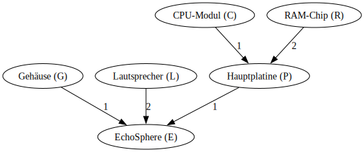
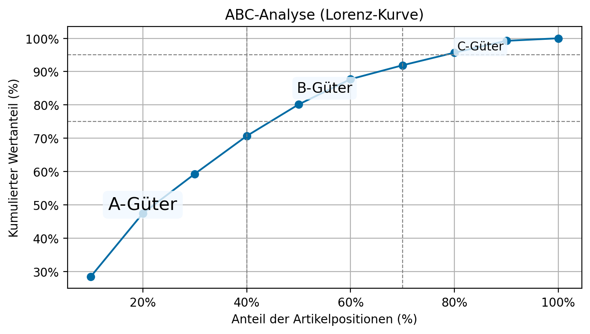

Weitere Aufgaben zu Vorlesung 01
Materialbedarfsermittlung und ABC-Analyse
Aufgabe 1: Materialbedarfsermittlung für einen “Smart Speaker”
Ein Hersteller von Unterhaltungselektronik plant die Einführung eines neuen Smart Speakers mit dem Namen “EchoSphere”. Die für die Montage notwendigen Komponenten und ihre Beziehungen sind in der Stückliste aufgeführt.
Struktur des “EchoSphere” (E):
- 1x Gehäuse (G)
- 2x Lautsprecher-Einheit (L)
- 1x Hauptplatine (P)
- 1x CPU-Modul (C)
- 2x RAM-Chip (R)
Produktionsplan:
Der Primärbedarf für den “EchoSphere” beträgt 80 Stück in Periode 9.
Stammdaten der Komponenten:
| Komponente | Lagerbestand | Vorlaufzeit (Perioden) |
|---|---|---|
| E (EchoSphere) | 10 | 1 |
| G (Gehäuse) | 20 | 2 |
| L (Lautsprecher) | 25 | 3 |
| P (Hauptplatine) | 5 | 2 |
| C (CPU-Modul) | 15 | 2 |
| R (RAM-Chip) | 40 | 1 |
Ihre Aufgaben:
- Gozinto-Graph zeichnen: Stellen Sie die Produktstruktur grafisch als Gozinto-Graph dar.
- Materialbedarfsermittlung: Führen Sie eine vollständige Materialbedarfsermittlung durch. Berechnen Sie für jede Komponente den Brutto- und Nettobedarf.
- Bestellzeitpunkte: Leiten Sie aus Ihrer Bedarfsrechnung die finalen Bestellzeitpunkte für alle benötigten Komponenten ab.
Lösung
1. Gozinto-Graph:
2. & 3. Materialbedarfsermittlung:
Komponente Bestellmenge (Nettobedarf) Bestellperiode
CPU-Modul (C) 50 4
Lautsprecher (L) 115 5
RAM-Chip (R) 90 5
Gehäuse (G) 50 6
Hauptplatine (P) 65 6
EchoSphere (E) 70 8Aufgabe 2: ABC-Analyse für einen Medizintechnik-Großhändler
Ein Großhändler für Medizintechnik möchte sein Sortiment analysieren, um die Lagerbewirtschaftung zu optimieren und Kosten zu senken. Die Daten für 10 ausgewählte Artikel sind wie folgt:
| Artikel-Nr. | Artikelbezeichnung | Jahresbedarf (Stück) | Preis pro Stück (€) |
|---|---|---|---|
| 1 | Skalpelle (10er-Pack) | 20000 | 8,00 |
| 2 | Ultraschallgel (1L) | 5000 | 15,00 |
| 3 | Einweghandschuhe (100er) | 50000 | 5,00 |
| 4 | Defibrillator | 50 | 12000,00 |
| 5 | Spritzen (100er) | 40000 | 10,00 |
| 6 | Infusionsständer | 200 | 80,00 |
| 7 | Operationsmasken (50er) | 60000 | 4,00 |
| 8 | MRT-Kontrastmittel | 100 | 800,00 |
| 9 | Desinfektionsmittel (5L) | 8000 | 25,00 |
| 10 | Stethoskop | 400 | 220,00 |
Ihre Aufgaben:
- Jährlichen Verbrauchswert berechnen: Berechnen Sie für jeden Artikel den jährlichen Verbrauchswert.
- Rangliste erstellen: Erstellen Sie eine Rangliste der Artikel nach ihrem Verbrauchswert in absteigender Reihenfolge.
- Prozentuale Anteile berechnen: Berechnen Sie den prozentualen Anteil jedes Artikels am Gesamtverbrauchswert.
- Kumulierte Anteile berechnen: Berechnen Sie die kumulierten prozentualen Wertanteile.
- ABC-Klassifizierung: Teilen Sie die Artikel in die Klassen A, B und C ein. Verwenden Sie typische Grenzen (z.B. A-Güter: >75% Wertanteil, B-Güter: >90% Wertanteil, C-Güter: Rest).
- Grafische Darstellung: Stellen Sie das Ergebnis grafisch in einer Lorenz-Kurve dar.
Lösung
Tabelle zur ABC-Analyse:
Bezeichnung Wert Wertanteil (%) Kum. Wertanteil (%) ABC-Klasse
0 Defibrillator 600000 28.45 28.45 A
1 Spritzen 400000 18.97 47.42 A
2 Handschuhe 250000 11.85 59.27 A
3 Masken 240000 11.38 70.65 A
4 Desinfektion 200000 9.48 80.13 B
5 Skalpelle 160000 7.59 87.72 B
6 Stethoskop 88000 4.17 91.89 B
7 Kontrastmittel 80000 3.79 95.69 C
8 Ultraschallgel 75000 3.56 99.24 C
9 Infusionsständer 16000 0.76 100.00 C
